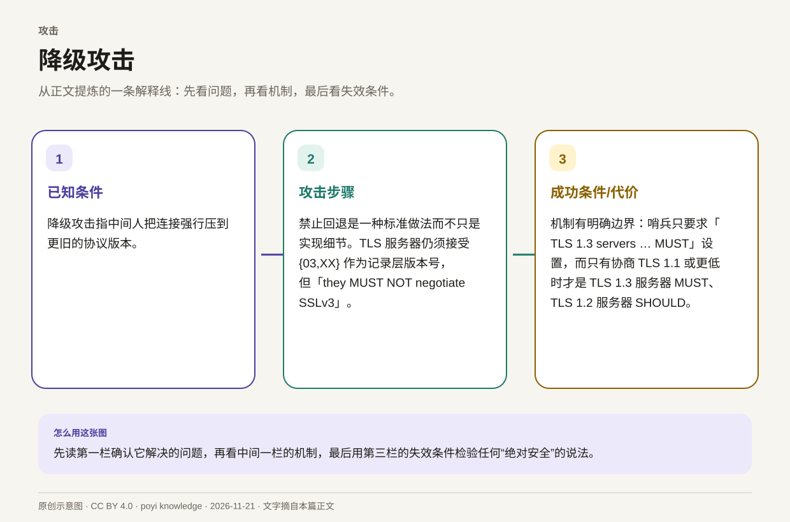
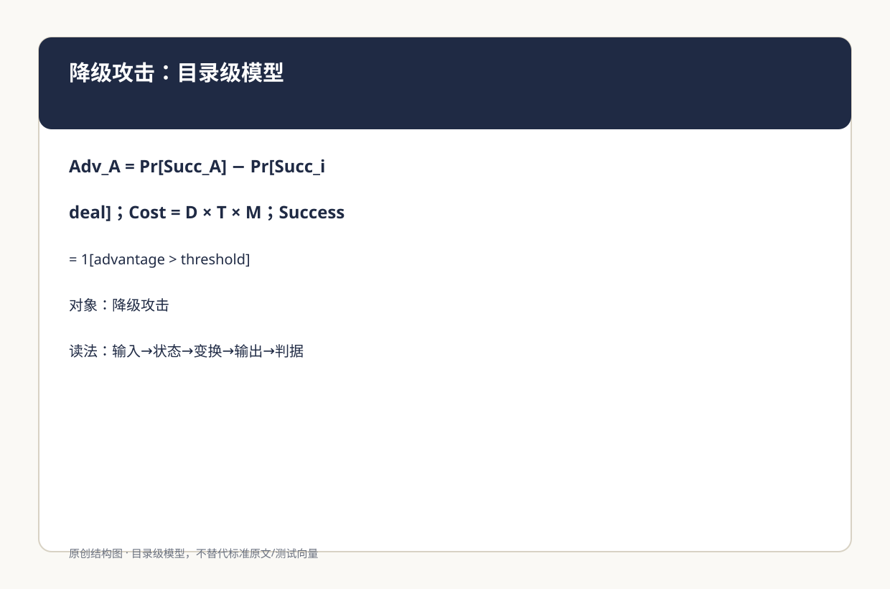

原理与机制
攻击：降级攻击（Downgrade Attack）。降级攻击指中间人把连接强行压到更旧的协议版本。TLS 1.3 把版本协商改为扩展：ClientHello 的「the legacy_version field MUST be set to 0x0303, which is the version number for TLS 1.2.TLS 1.3 ClientHellos are identified as having a legacy_version of 0x0303 and a supported_versions extension present with 0x0304 as the highest version indicated therein」。§4.1.3 进一步规定「TLS 1.3 has a downgrade protection mechanism embedded in the server's random value.TLS 1.3 servers which negotiate TLS 1.2 or below in response to a ClientHello MUST set the last 8 bytes of their Random value specially in their ServerHello」，TLS 1.2 情形写入哨兵字节 44 4F 57 4E 47 52 44 01，TLS 1.1 或更低为 …00。

为什么重要
Finished 交换本身已能发现部分篡改，但版本回退需要更早、更明确的信号：§1.3 声明「A version downgrade protection mechanism is described in Section 4.1.3」，§4.1.3 则区分两类客户端：TLS 1.3 客户端「MUST check that the last 8 bytes are not equal to either of these values」，TLS 1.2 客户端则只是「TLS 1.2 clients SHOULD also check that the last 8 bytes are not equal to the second value」；一旦匹配，「If a match is found, the client MUST abort the handshake」，告警取 illegal_parameter，同时坦承「This mechanism provides limited protection against downgrade attacks over and above what is provided by the Finished exchange」，并指出「It does not provide downgrade protection when static RSA is used」。
应用与实例
禁止回退是一种标准做法而不只是实现细节。RFC 7568 写明「The Secure Sockets Layer version 3.0 (SSLv3), as specified in RFC 6101, is not sufficiently secure.This document requires that SSLv3 not be used」，并在 §3 规定「SSLv3 MUST NOT be used.Negotiation of SSLv3 from any version of TLS MUST NOT be permitted」，客户端「MUST NOT send a ClientHello with ClientHello.client_version set to {03,00}」，服务器同样不得应答该版本；TLS 服务器仍须接受 {03,XX} 作为记录层版本号，但「they MUST NOT negotiate SSLv3」。

边界与攻击面
机制有明确边界：哨兵只要求「TLS 1.3 servers … MUST」设置，而只有协商 TLS 1.1 或更低时才是 TLS 1.3 服务器 MUST、TLS 1.2 服务器 SHOULD；静态 RSA 套件下不提供保护；客户端也必须真的检查这些字节。TLS 1.3 因此同时删除可被利用的旧能力：「The list of supported symmetric encryption algorithms has been pruned of all algorithms that are considered legacy」、「Static RSA and Diffie-Hellman cipher suites have been removed; all public-key based key exchange mechanisms now provide forward secrecy」，并移除压缩、DSA 与自定义 DHE 群；§6.2 的错误告警表列出 inappropriate_fallback（服务器对客户端非法重连尝试的回应，引用 RFC 7507），附录 C.3 的部署检查要求确认「all support for SSL, RC4, EXPORT ciphers, and MD5 … is completely removed」。
历史与背景
RFC 7568 由 Barnes、Thomson、Pironti 与 Langley 撰写，2015 年 6 月发布为 Standards Track 并更新 RFC 5246；§4.1 给出理由：SSLv3 的 CBC 填充「trivially permits the recovery of plaintext [POODLE]」，RC4「exhibits serious biases and is also no longer fit for use [RFC7465]」，因此「This leaves SSLv3 with no suitable record protection mechanism」，§4.2 补充其密钥交换在重协商或会话恢复下易受中间人攻击。RFC 8446（Rescorla，2018 年 8 月）随后废弃了 TLS 1.2 的版本协商机制，改用扩展版本列表。
逐步示例与核验
形式模型与复算步骤
[\mathrm{Adv}^{\mathrm{attack}}_A(\lambda)=\Pr[\mathrm{Game}_A(\lambda)=1]-\frac12]
降级攻击的公开参数、密钥/随机数与消息；变量说明：λ 安全参数；Game 把攻击目标写成挑战-响应游戏。1.定义挑战与获胜条件。2.给攻击者 oracle 访问。3.计算优势并与目标界比较。边界：公式只覆盖已登记的参数与假设；参数取值、标准版本和实现细节仍以来源为准。
参考出处
- Wikipedia search entry for 降级攻击. https://zh.wikipedia.org/w/index.php?search=%E9%99%8D%E7%BA%A7%E6%94%BB%E5%87%BB
- Handbook of Applied Cryptography (Menezes, van Oorschot, Vanstone). https://www.cacr.math.uwaterloo.ca/hac/